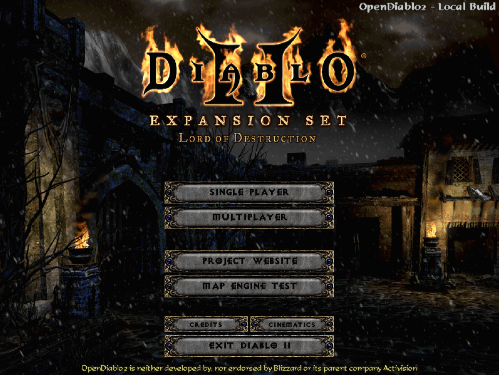

OPENDIABLO 2
An open-source implementation of Diablo2
Github Project Page
OpenDiablo2 is an ARPG game engine in the same vein of the 2000's games, and supports playing Diablo 2. The engine is written in golang and is cross platform. However, please note that this project does not ship with the assets or content required to play Diablo 2. You must have a legally purchased copy of Diablo 2 and its expansion Lord of Destruction installed on your computer in order to run that game on this engine. If you have an original copy of the disks, those files should work fine as well.
Currently we are working on features necessary to play Diablo 2 in its entireity, but will then expand with tools and plugin support to allow modding, as well as writing completely new games with the engine.
We are in the process of moving to a go based engine. We are taking good bits from the original C# base and migrating it over to the new engine code.
Please note that this game is neither developed by, nor endorsed by Blizzard or its parent company Activision.
Diablo 2 and its content is ©2000 Blizzard Entertainment, Inc. All rights reserved. Diablo and Blizzard Entertainment are trademarks or registered trademarks of Blizzard Entertainment, Inc. in the U.S. and/or other countries.
ALL OTHER TRADEMARKS ARE THE PROPERTY OF THEIR RESPECTIVE OWNERS.
Screenshots
